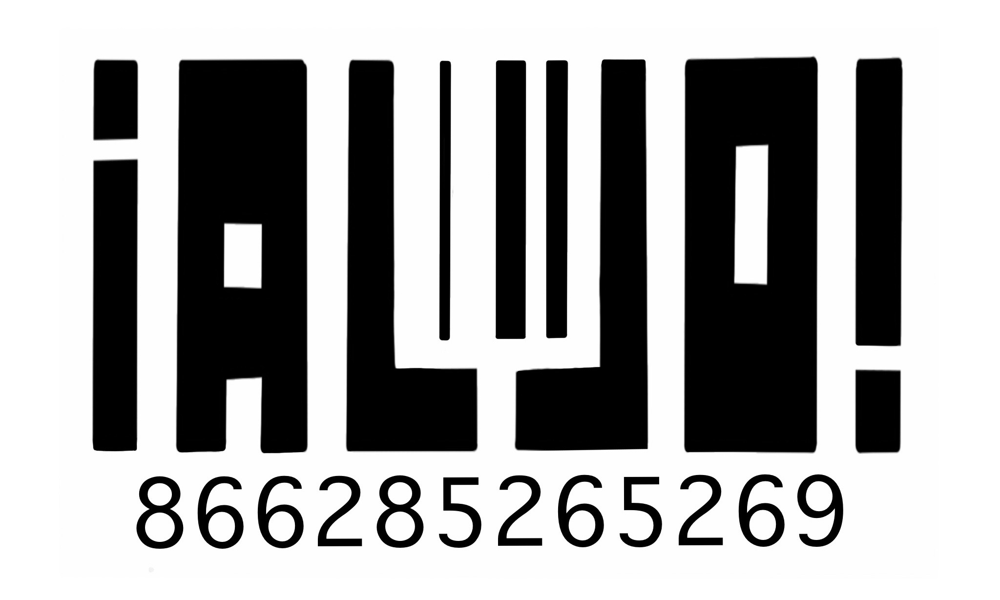

Alejo Cruz
freelancer | New York, NY | @alejocruz.mp4
Alejo Cruz is a New York-based Mexican-American journalist and filmmaker. He is a Master’s student at Craig Newmark Graduate School of Journalism at CUNY studying bilingual journalism with a specialization in documentary storytelling. Cruz approaches journalism like a sociologist. He is passionate about human rights and resources.
work experience
The Fulcrum | Sept. 2026 - Present
- Student writer, solutions-focused reporter training, civic journalism project development.
- Strengthening democratic storytelling skills to cover the systems shaping American civic life.
KUNR Public Radio - NPR affiliate station | June 2025 - Dec. 2025
Investigative Reporting Intern
- Reported on local news in Northern Nevada contributing to the coverage for the Mountain West region.
- Produced spot news coverage that aired on KUNR 88.7fm, wrote and translated web stories in English & Spanish.
- Focused on migration and homelessness. Republished by other stations in the Mountain West News Bureau.
- Worked alongside investigative reporter Bert Johnson and visualized data.
The Nevada Sagebrush | Aug. 2024 - Dec. 2025
Spanish Editor
- Connected The Nevada Sagebrush to the Latino community at the University of Nevada, Reno and greater Reno metropolitan area. Provided Spanish translations for select publications.
- Developed experimental bilingual column “ Fingerprints”,an epistolary record documenting the response from marginalized students as they attend university as political tensions intensify.
The Science of Happiness | April 2026
Field Producer/Freelancer
- Contributed to " The Art of Slow Looking" by interviewing middle schoolers at an art museum for UC Berkeley's Greater Good Science Center .
- Produced the audio clips necessary for the episode on a quick turn around.
The New York Times | Nov. 2024
Election Stringer
- Traveled to rural Nevada to collect ballot information on various counties during the 2024 Presidential Election.
- Contributed to The NYT Needle.
- Met with NYT data analysts for professional development and research training.
education
Master of Arts in Journalism
Bilingual Program, Video Specialization
Estimated Graduation: Dec. 2027
University of Nevada, Reno | Reno, NV
Bachelor of Arts in Spanish, minor in Sociology
First-Generation, R1 Institution
May 2026
affiliations
GoodKid.Online | Co-founder
- A (soon-to-be nonprofit) film collective of freelancers across the United States working towards reshaping film culture.
- Writer & managing editor of the GoodKid monthly blog.
National Association of Hispanic Journalists | Student Member
- Current member of the NAHJ Newmark chapter at CUNY.
- Recipient of NAHJ Nevada Scripps Howard Fund Scholarship for summer 2025 internship.
skills
Technical Skills
Research Tools & Databases (e.g. JSTOR, ProQuest), Script Writing, Adobe Audition, Adobe Premiere Pro, Adobe Lightroom, Hindenburg, RStudio, data management, audio transcription.
Language Skills
Spanish (Native), English (Native), Portuguese (Limited Working Proficiency)
contact
for all inquiries: alejocruz.mp4@gmail.com
# upon request
